C:/Users/Miles_Keiser/Projects/
PCB/
Custom Robot Controller
USB Human Input Device Implemented with a Custom PCB
This project was my first fully solo PCB project. Overall, it is a control panel with various inputs that can feed into a PC via USB. It features 5 buttons, 1 rotary switch, 2 rotary encoders, and a linear slider.
These are all mounted to a custom 3D printed panel designed in Onshape. The PCB containes the Pi Pico and terminal blocks for the wires to the inputs to connect to. It also features an 8 to 1 shift register. Ostensibly, this was done to save pins on the pico, but it was mostly for fun, since the pico had enough pins for each button without the IC.
The pico connects to the PC via a Micro USB cable.
The pico was programmed in CircuitPython and appeared to the PC as a standard gamepad.
The solution for connecting the panel buttons/encoders/slide was definitely bad in hindsight. I just soldered wires directly to the leads, which made it all very fragile.
Next time I would mount them to a little mounting PCB, then connect the wires to those little PCBs.
Overall, it's a pretty simple project, but it taught me a lot about the process of going from idea to finished product.
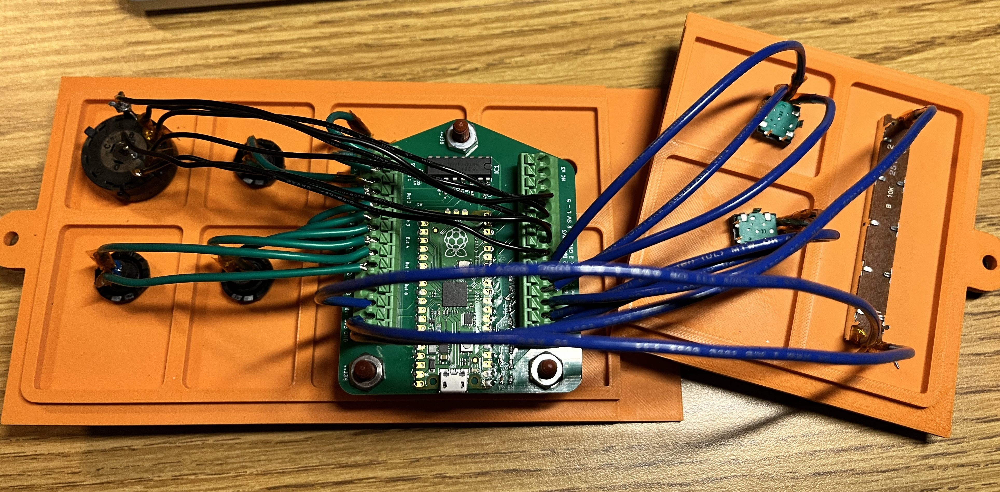
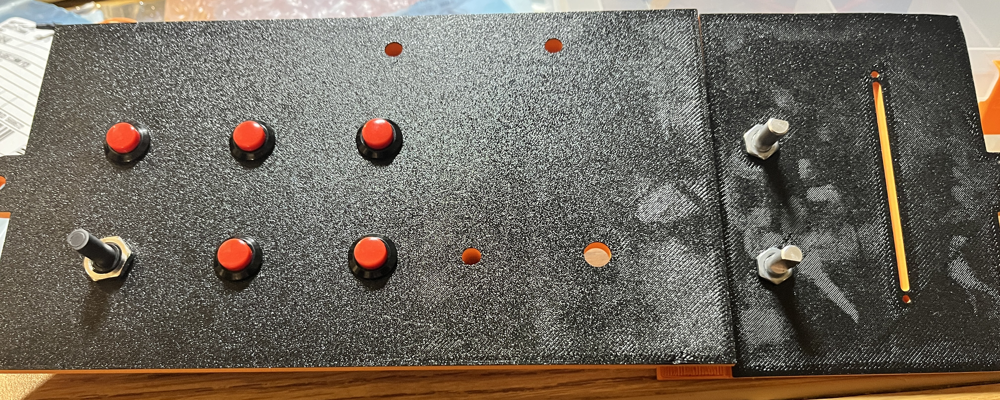
Autonomous Relay Control PCB (Formula Electric)
Autonomous Shutdown Circuit handling board
My first PCB assignment on the Low Voltage subteam for Formula Electric Berkeley.
Overall, the board is responsible for handling various autonomous mode functions. It handles the shutdown circuit (SDC), autonomous indicator lights, and powering the emergency brake solenoid for autonomous mode.
When the car is operating normally, the board just passes the shutdown signal through. When in auto mode, however, a relay routes SDC to an off-board Remote Emergency Stop relay.
In auto mode, SDC is additionally gated by a 2nd relay that is controlled by an external button. Finally, there is a relay holds the Emergency Brake solenoid open if SDC on.
The board features 3 voltage regulators (24V -> 12V, 24V -> 5V, 5V -> 3.3V) which power various functions on the board. It also has some high current pathways (mainly SDC and the power for the solenoid), so I had to consider trace widths.
It was also a little space constrained, so more attention had to be paid to how all of the components were laid out, especially since there were several large components (relays, connectors).
This project also happened to be the first time I used Altium, which was quite a bit more complicated than KiCAD. However, I was quickly able to familiarize myself and make effective use of the tool.
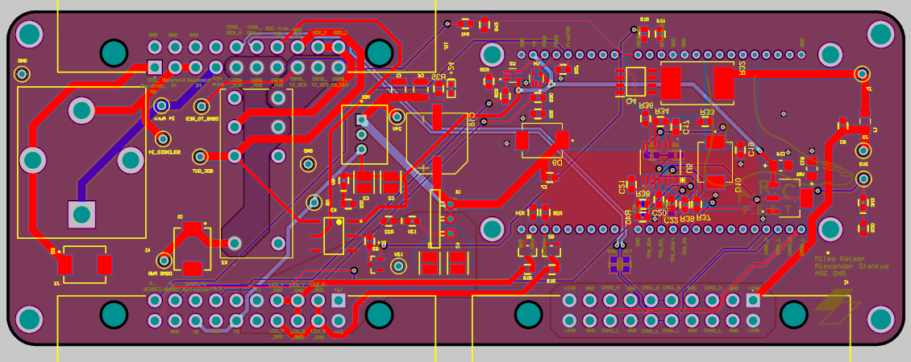
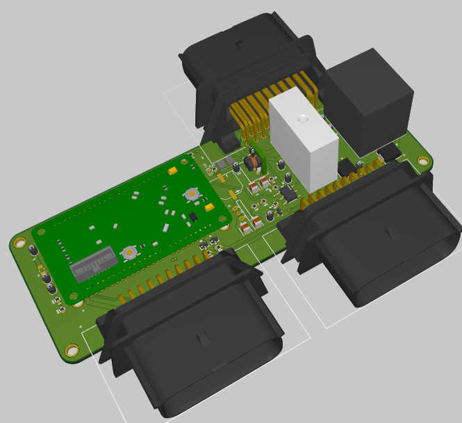
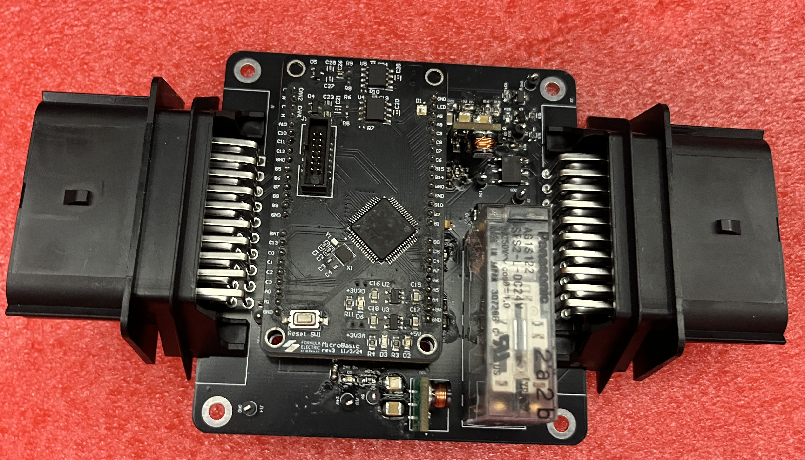
Software/
sGit
Shitty Git - Command Line Source Control Application
My first real C program. Over the course of 4 days I set out to create a program capable of basic source control. The program (sGit) works by storing the differences between a file's current state and it's state in the previous commit. These differences are stored in a text file for later reference(.sgit.txt). sGit is able to reconstruct the exact file state from just the initial state and the accumulated differences. It is currently a bare bones implementation with several significant limitations, including not being able to track files nested within the project directory and not supporting the deletion of files. Implemented commands: help, init, commit, checkout. AI Usage: No code written by an LLM. An LLM was used for help with some algorithms. AI Overview was also referenced
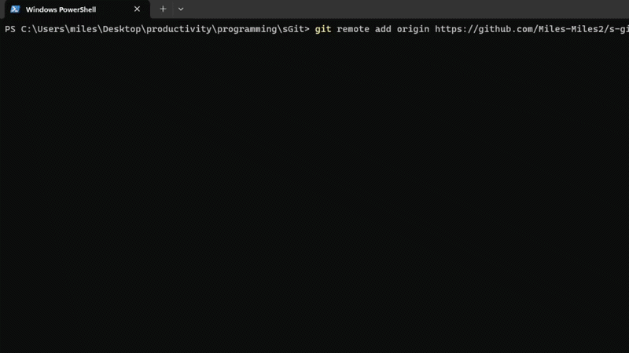
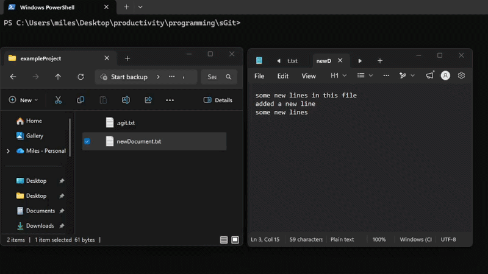
CAD/
"Spinnerella" Combat Robot
1lb PLA-nt Weight Combat Robot "Spinerella"
Designed, 3D printed, and competed with a 1lb 3D printed combat robot as a team of 4. We decided on a 2 wheel, invertible, vertical spinner design. I was responsible for and led the CAD for the robot.
The weapon was powered by a hub motor, which itself was supported on both sides by weapon rails. The weapon rails also featured "ears" that were supposed to stop the weapon from hitting the ground when upside down.
In theory, this would allow the bot to be invertible (i.e. function while upside down). However, in practice the wheels weren't able to get enough grip, causing us to be stuck.
The robot also featured parametric sloped armor that wrapped around the sides and front of the bot, which I'm particularly proud of. The angle and thickness of the armor was adjustable via variables.
The armor would then adjust according. Also, it would conform to any changes in the chassis' dimensions, requiring no outside intervention.
Unfortunately, our wheels were able to get enough grip, causing our mobility to be severely limited. In the tournament, this deficiency ultimately caused us to lose some matches we really shouln't have and led to an early exit.
Overall though, this was my most serious CAD project at the time, and was, in my opinion, pretty well designed. If we didn't have that mobility issue, I think we could've made it pretty far.
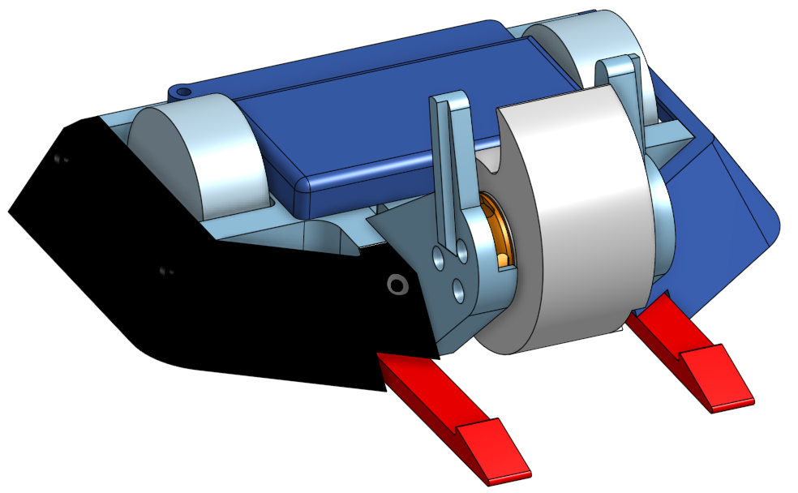
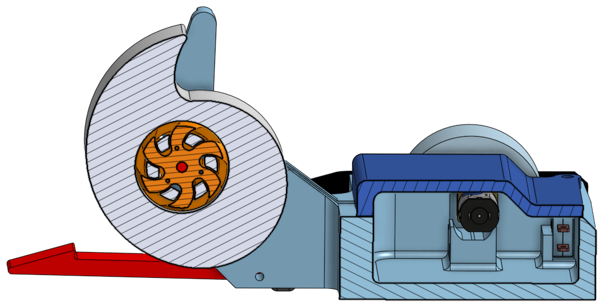
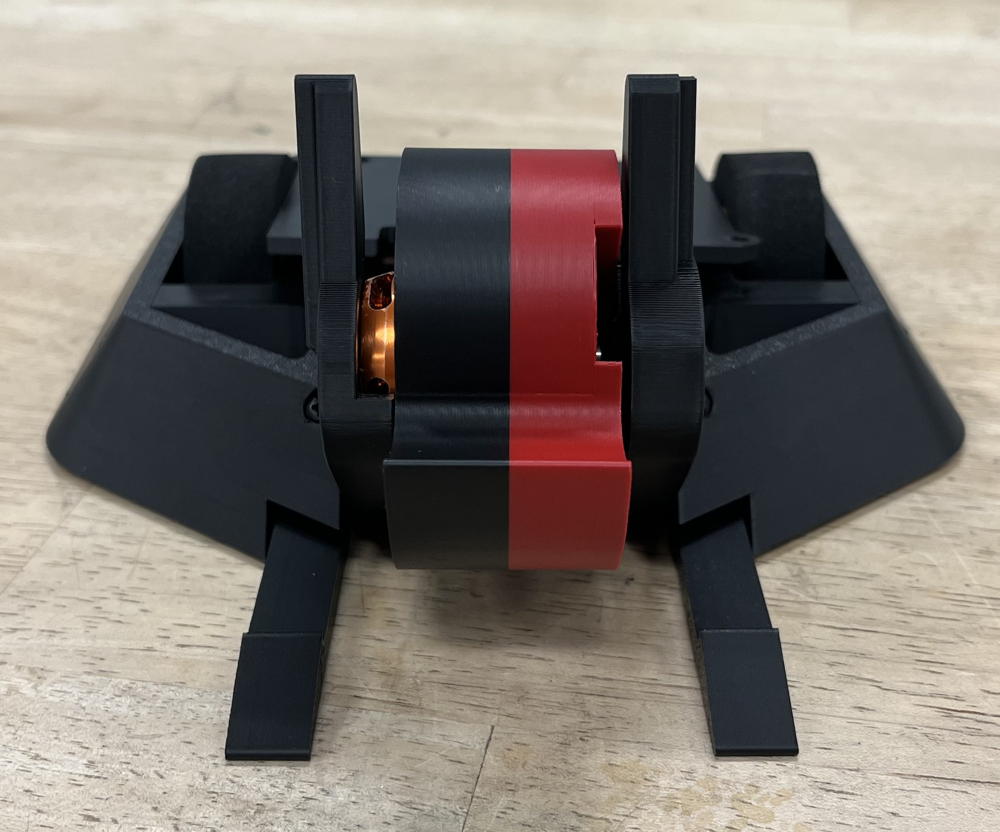
"SwingWing" CAD-a-thon Competition (2nd Place)
Shape changing drone designed for 8 hour CAD-a-thon
In Spring 2026 I participated in an 8 hour CAD-a-thon along with 3 other teammates. The challenge was to design a system that was capable of transporting essential items across urban terrain. Our solution was a quadcopter drone with 2 of the arms featuring hinges. The hinges were passive, so if we drove the corresponding motors in reverse, the arms would fold down and graps any package below using rubber grippers. My primary responsiblity was speccing all of the electronics. I had to consider flight time, power usage, and the computer vision stack. I decided a battery that would let us reach enough destinations. I also chose the cameras/sensors and computer that would let us navigate an urban environment autonomously, as well as a suitable flight controller. In order to connect these difference pieces I designed a cusom PCB that would connect the Pi, flight computer, battery, and ESCs.
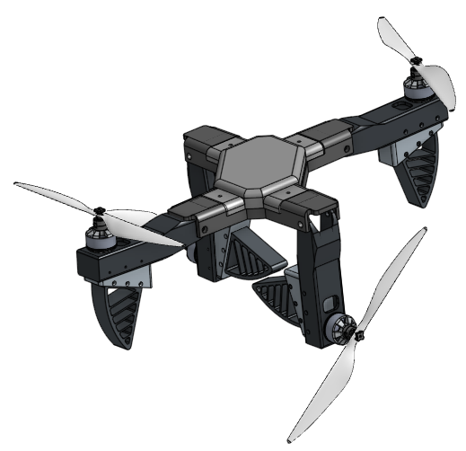
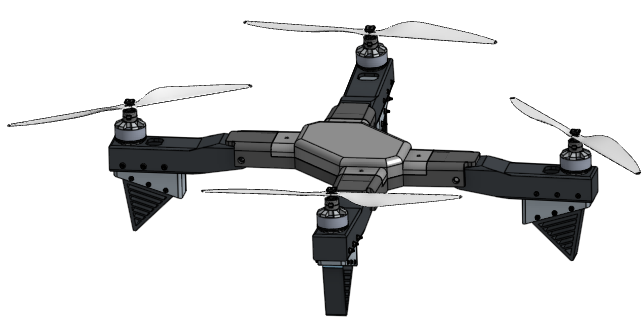
Misc/
FPGA Optimization Internship
Minimize bus cycles times on Cycle IV FPGA at Opto22
The product I worked on featured an IMX6ULL processor and Cyclone IV FPGA. The FPGA acts as a middleman between the processor and the off-board modules plugged into the rack.
The slowest action (accessing the Digital I/O lines) took 17 processor clock cycles. My task was to optimize this and reduce the number of cycles required for accesses.
This was complicated by the fact that the processor (running at 99 Mhz) and the FPGA (80 Mhz) were asynchronous. I mainly made savings by moving the Digital IO Verilog module to the main 80 Mhz clock the rest of the FPGA was running on, since it was running on a separate 20 Mhz clock before.
I also removed and shuffled around the double latching to make the accesses faster while maintaining integrity.
In the end, I was able to reduce the theoretical fastest bus cycles from 17 to 9 for Digital I/O accesses. However, the system became bottlenecked by a different module, so the actual performance gain was from 17 to 11 cycles.
When I finished the optimizations, I wrote several bash scripts that thoroughly tests all of the FPGA's funcitonality to ensure that my changes didn't mess anything up.
I ran these tests overnight in an oven (70 Celcius to -15 Celcius) to catch all edge cases and found no errors, qualifying my changes to be deployed into production.
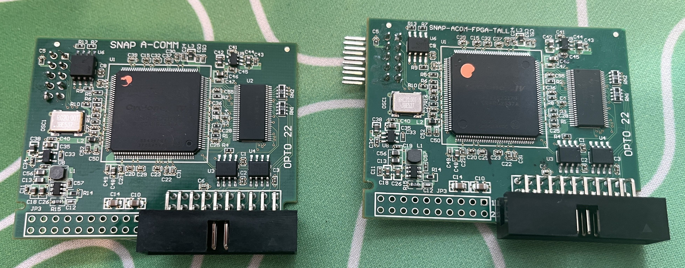